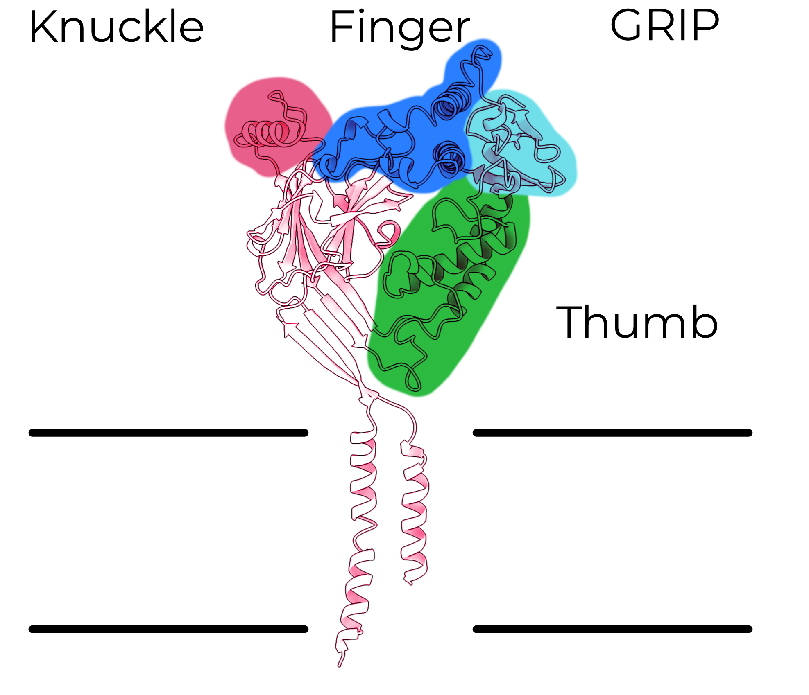
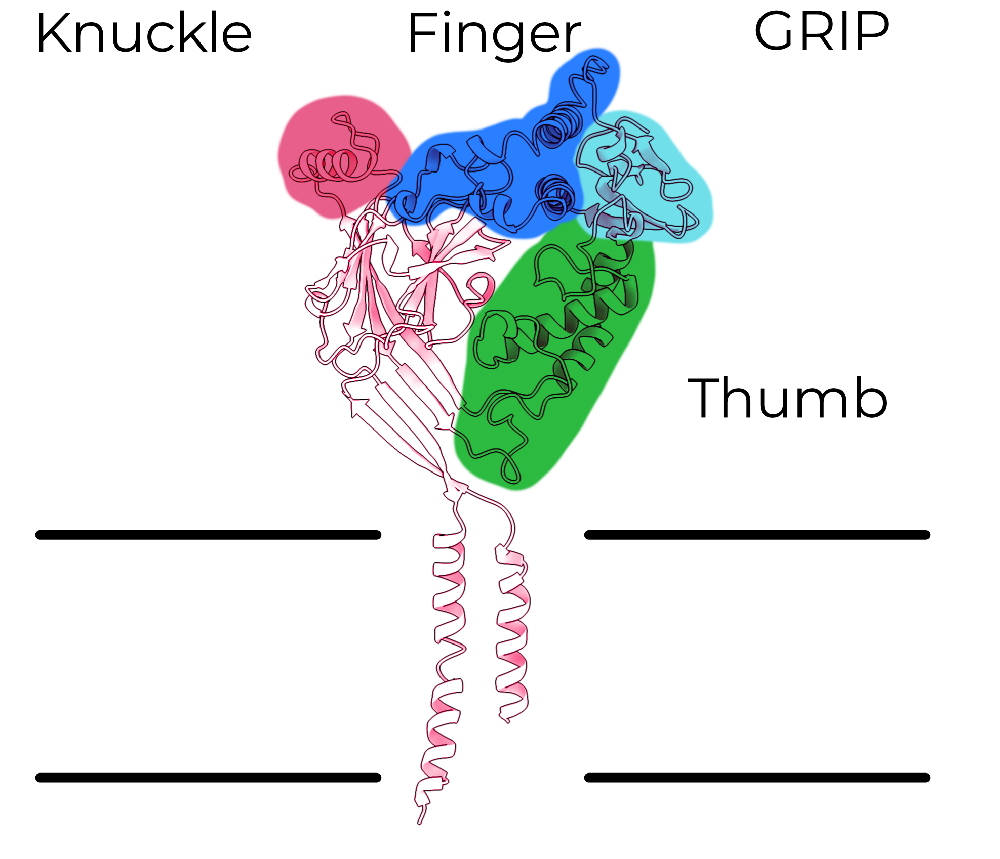

We love salt
Mustafa Bashari on Unsplash
But salt doesn't
always taste good
Ant Rozetsky on Unsplash
Assuming coordination number of 6, from Mähler, J. & Persson, I. A Study of the Hydration of the Alkali Metal Ions in Aqueous Solution. Inorg. Chem. 51, 425–438 (2012).
Chris Briggs and Tatiana Rodrigues on Unsplash
Salt can taste bad
Too much salt

Salt made of the wrong ion
Both of these processes are controlled by the Epithelial Sodium Channel
Epithelial Sodium Channel (ENaC)


Epithelial Sodium Channel (ENaC)
But why do we need an ion channel in the first place?
How do we know all this?
Function
What the protein does
- What happens to currents through the channel?
- How much ENaC ends up at the surface of the cell?
- How selective is the channel for sodium over potassium?
Structure
How the protein's atoms are arranged
- Which parts of this protein have the same 3D shape in different organisms?
- How does this part of the channel move when it opens and closes?
- What about these particular atoms makes them so important?
How
do we
look at
proteins?
How do we look at proteins?
- Produce and purify the protein
- Image the protein
- Produce and purify the protein
The cell
- Produce and purify the protein
- Image the protein
Proteins are too small to be seen with visible light
How can we get a 3D map from 2D images?
What is a map?
Hans Isaacson on Unsplash

Unfortunately, it's not that simple
Simplified model data
Simplified model data

Simplified model data

Average of ten noisy images
Simplified model data
Average of 100 noisy images
Simplified model data
Simplified model data
Ideal image (no noise)
Single noisy image
Average of ten images
Average of 100 images
Phew!
We've finally got a map!
Now we can use the map to make a model
Phew!
We've finally got a map!
Now we can use the map to make a model
ENaC Domains
 


ENaC Domains
Each subunit has each domain.
Each channel has one of each subunit.
ENaC Domains

ENaC Domains
ENaC opens when the GRIP domain is removed
That's cool!
Uhh...how does it work?
A brief and unhinged aside on
ASIC
ASIC
We care about related proteins (like ASIC) because they're easier to understand and they still tell us something about our protein of interest.
ASIC doesn't have a GRIP domain, but it does have a finger and thumb.
So we kinda know what ENaC looks like
And we know how ASIC works
I want to figure out what is different about ENaC
I want to figure out what is different about ENaC
- How is ENaC so specific for potassium over sodium?
- How exactly does ENaC interact with its regulatory partners?
- How does cleavage of the GRIP domain open the channel?
Does trypsin cut ENaC?
Does trypsin cut ENaC?
Trypsin cuts purified ENaC


Does trypsin cut ENaC? ✔️
Does cutting out the GRIP open the channel?
Does trypsin cut ENaC? ✔️
Does cutting out the GRIP open the channel? ✔️
Do the finger and thumb move when the channel opens?
Remember: the GRIP is unique to ENaC
Cleavage does not move the ECD
We want to see if the inhibitory peptide gets removed, and if that lets the finger and thumb collapse


The rest of the ECD moves less than an angstrom, on average.
(That's basically nothing.)
Does trypsin cut ENaC? ✔️
Does cutting out the GRIP open the channel? ✔️
Do the finger and thumb move when the channel opens? ❌
Does cleavage open the pore?
Proteins
wiggle!


So what does ENaC's TMD look like?
The TMD is likely misfolded


Does trypsin cut ENaC? ✔️
Does cleavage move the finger and thumb? ❌
Does cleavage open the pore? ü§∑
Does trypsin cut ENaC? ✔️
Does cleavage move the finger and thumb? ❌
Does cleavage open the pore? ü§∑
Can we learn anything else?
A conserved β-turn in the palm
A conserved β-turn in the palm

A conserved β-turn in the palm
Sugars contact the membrane
Sugars contact the membrane

Sugars contact the membrane

Where to next?
Jakob Owens on Unsplash
Try other orthologs
Zdeněk Macháček on Unsplash
Try other detergents
Erik Binggeser on Unsplash
Mutate the β6-α4 linkers
Acknowledgements
Baconguis Lab
Alex Houser üë∂
James Cahill ü뮂Äç‚öïÔ∏è
Arpita Bharadwaj
Kim Hartfield
Sigrid Noreng üèÉ
Gouaux Lab
Johannes Elferich üèÉ
Zad Jalali-Yazdi üèÉ
Vikas Navratna üèÉ
Chang Sun
DAC
Dave Farrens
Jonathan Pruneda
Swetha Murthy
Steve Reichow
MMC / PNCC
Claudia López
Craig Yoshioka
Theo Humphreys üèÉ
Steven Adamou
GRU Bargaining Team
Sam Papadakis üèÉ
Marc Meadows üèÉ
Danielle Mathieson üèÉ
üí∞ Funding üí∞

T32GM071338-13
R01GM138862
19TPA34760754